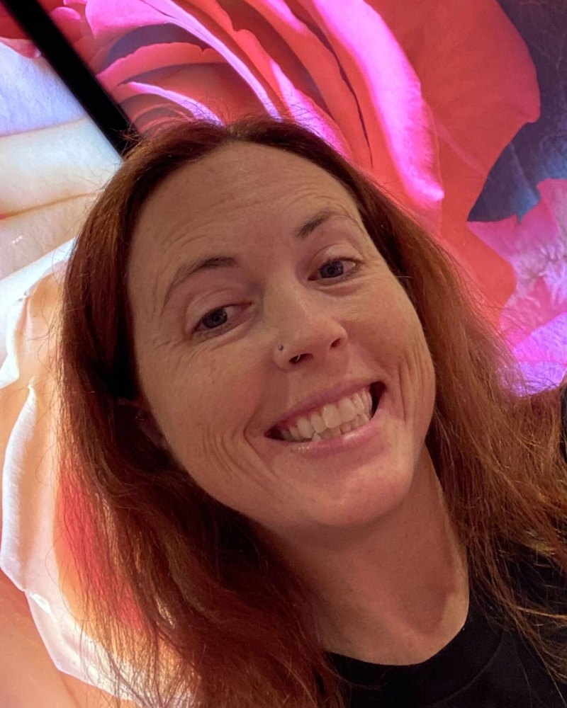
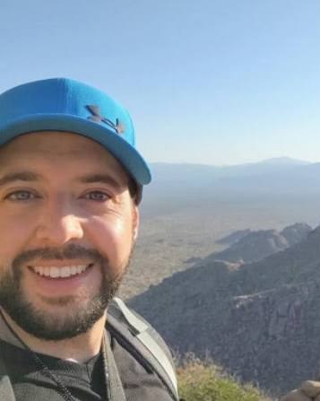

People
People in the Lab

Principal investigator
Leigha M. Lynch, PhD
Associate Professor, Department of Anatomy, Midwestern University
Dr. Lynch is a vertebrate morphologist and anatomist. She has studied and borrowed specimens from more than a dozen natural history collections, including the AMNH, Smithsonian, Carnegie, and Burke museums, and leads Gross Anatomy/Embryology for seven clinical programs.
- PhD
- Biomedical Sciences, Anatomy and Vertebrate Paleontology · Oklahoma State University Center for Health Sciences, 2018
- Postdoc
- Washington University School of Medicine in St. Louis, 2018–2020
- MS / BS
- Geosciences, East Tennessee State University · Geology, Bowling Green State University

Senior research specialist
Dominik R. Valdez
Senior Research Specialist, Department of Anatomy, Midwestern University
Dominik Valdez is a senior research specialist whose work bridges photography, imaging, and the bench. He builds 3D models from the lab's CT scans, including the skull and endocast image on our home page, and produces and edits the lab's photographs. His research spans comparative anatomy, histology, and human anatomical variation.
- Photography and imaging
- Anatomical photography, contrast-enhanced CT (diceCT), and 3D segmentation and rendering
- Histology
- Tissue preparation and microanatomy, from the reproductive organs of the Arabian oryx to retinal ganglion cells in the green iguana
- Comparative anatomy
- Dissection-based studies of African wild dog cranial muscles, macaroni penguin limb muscles, and the felid brachial plexus
- Human anatomy
- Cadaveric studies of coronary vasculature, lumbar plexus nerves, and breast anatomy
- Morphometrics
- Directional asymmetry in North American river otter limb bones
- Recognition
- Finalist, Anatomy BioArt Competition, American Association for Anatomy
Current students
- Milena DouglasOsteopathic Medicine
- Cole McNeilOsteopathic Medicine
- Georgianna MillerOsteopathic Medicine
- Yesaan RodriguezOsteopathic Medicine
- Isabel PiccininiVeterinary Medicine
Alumni and past trainees
Graduate students
- Kristin MarshMBS · Midwestern
- John NealMBS · Midwestern
Graduate trainees
- Sarah BaumgartenPhD · WashU
- Christopher LawrencePhD · Univ. of Tulsa
- Brent AdrianPhD · Arizona State
- Olivia FranklinMS · Idaho State
- Morgan McKennaMS · Idaho State
- Michelle CarpenterMS · Idaho State
Undergraduate researchers
- Khanh ToOklahoma State
- Gage HollemanUniv. of Tulsa
- Lauren BatemanUniv. of Tulsa
Professional students
Veterinary Medicine Angela Boyer · Megan Hostetter · Erykah Strong
Osteopathic Medicine Jonathan Tuscano · Matthew Mckoy · Dureali Mirjat · Colton Lane · Matthew Gross · Rafael Rios · Sofia Barajas · Erika Tanquilut · Hansan Jones · Ho Lok · Austin Bay · Alexzander Rich · Ainsley Durning · Wyatt Gardner · James Bates · Blake Andrea · Wael Almasri · Pravleen Kaur
Pharmacy Diana Saadeh